THIS IMAGE TAKEN IN 2005 SHOWS THE BEAUTIFUL RINGS OF THE PLANET SATURN, IN HUMANITY'S SOLAR SYSTEM.

Four images from New Horizons Long Range Reconnaissance Imager LORRI were combined with color data from the spacecraft Ralph instrument to create this enhanced color global view of Pluto.
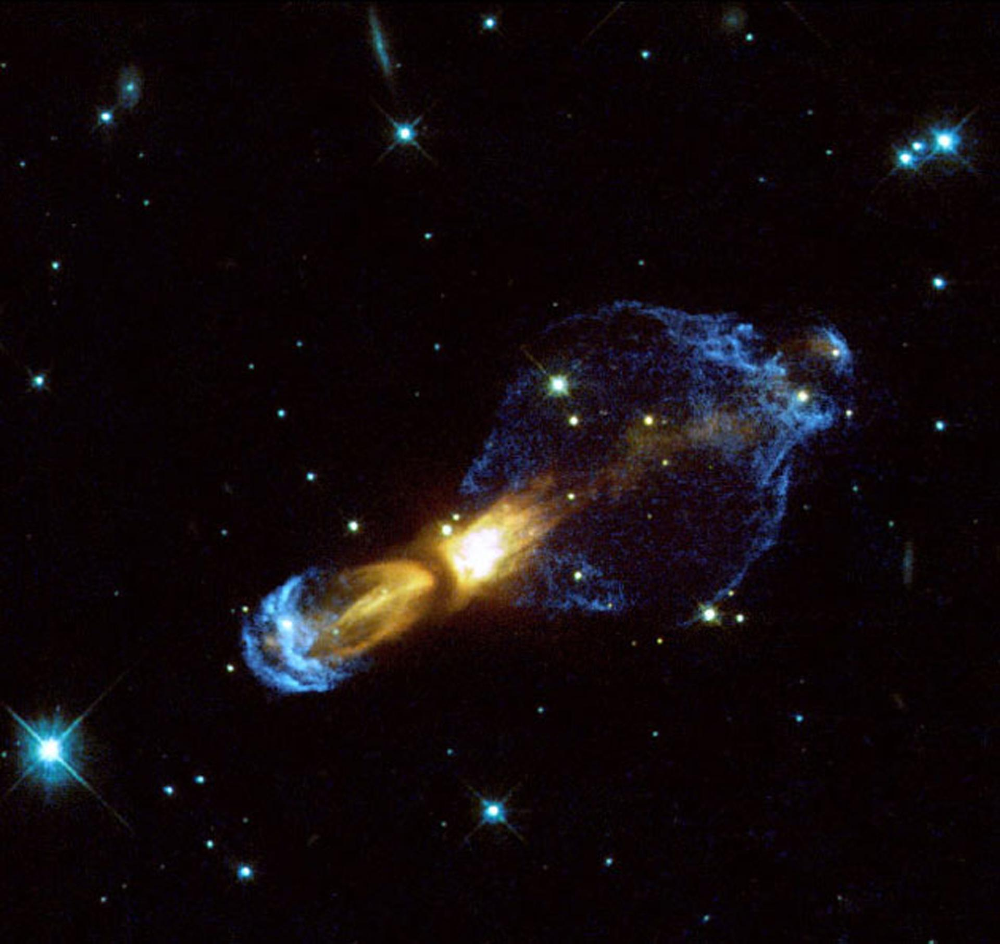
Some 5,000 light years (2,900 trillion miles) from Earth, in the constellation Puppis, is the 1.4 light years (more than 8 trillion miles) long Calabash Nebula.

This Hubble telescope snapshot of MyCn18, a young planetary nebula, reveals that the object has an hourglass shape with an intricate pattern of etchings in its walls. A planetary nebula is the glowing relic of a dying, Sun-like star.

This NASA/ESA Hubble Space Telescope image shows a planetary nebula named NGC 6153, located about 4000 light-years away in the southern constellation of Scorpius (The Scorpion).

This ultraviolet image from NASA Galaxy Evolution Explorer is of the planetary nebula NGC 7293 also known as the Helix Nebula.

This image, taken by the NASA/ESA Hubble Space Telescope, shows the colorful "last hurrah" of a star like our sun. The star is ending its life by casting off its outer layers of gas, which formed a cocoon around the star's remaining core.
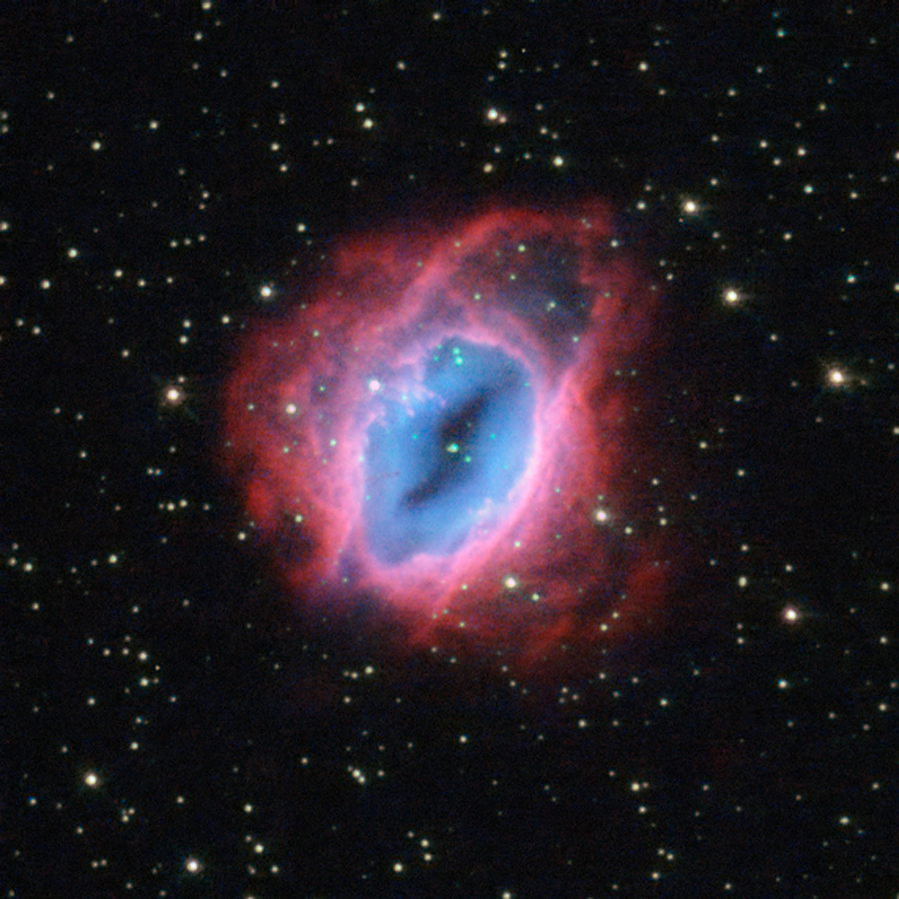
It may look like something from "The Lord of the Rings" but this fiery swirl is actually a planetary nebula known as ESO 456-67. Set against a backdrop of bright stars, the rust-colored object lies in the constellation of Sagittarius (The Archer), in the southern sky.
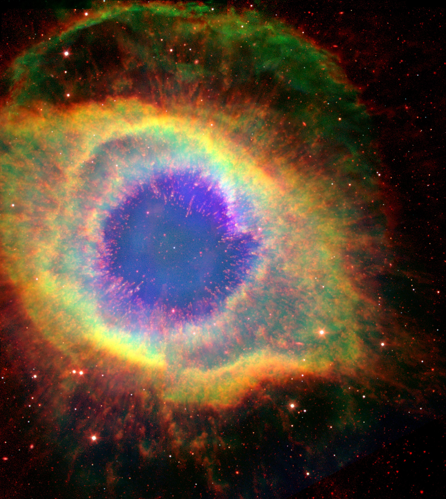
Six hundred and fifty light-years away in the constellation Aquarius, a dead star about the size of Earth, is refusing to fade away peacefully. NASA Hubble and Spitzer Space Telescopes have captured the structure of the Helix nebula.
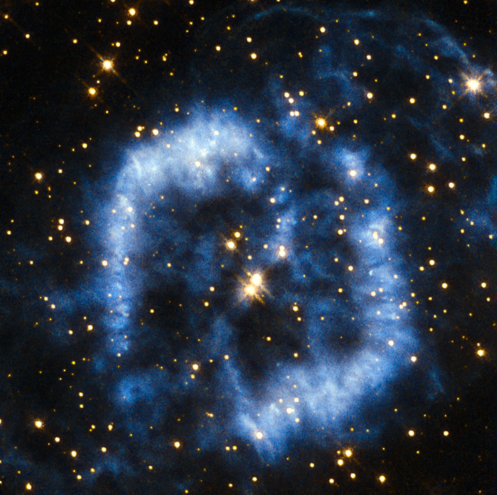
This planetary nebula is called PK 329-02.2 and is located in the constellation of Norma in the southern sky. It is also sometimes referred to as Menzel 2, or Mz 2, named after the astronomer Donald Menzel who discovered the nebula in 1922.

NASA’s Hubble Space Telescope has unveiled in stunning detail a small section of the expanding remains of a massive star that exploded about 8,000 years ago.
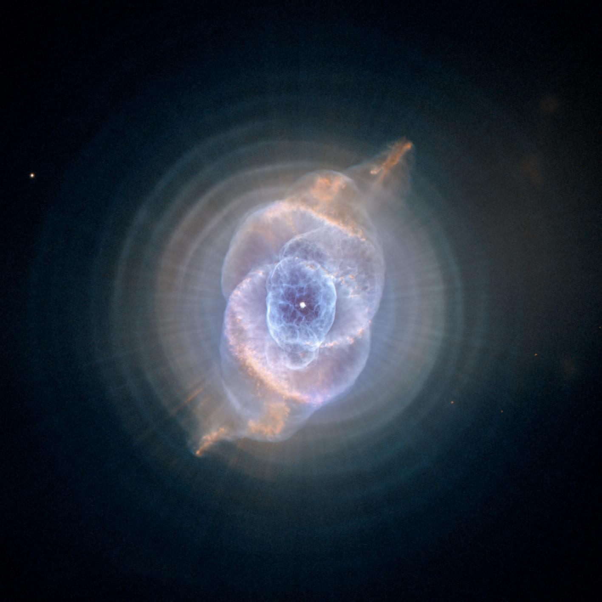
This detailed view of NGC 6543, the Cat Eye Nebula, from NASA Hubble Space Telescope includes intricate structures, including concentric gas shells, jets of high-speed gas, and unusual shock-induced knots of gas.

Sparkling at the centre of this beautiful NASA/ESA Hubble Space Telescope image is a Wolf–Rayet star known as WR 31a, located about 30 000 light-years away in the constellation of Carina (The Keel).

Here we see the spectacular cosmic pairing of the star Hen 2-427 — more commonly known as WR 124 — and the nebula M1-67 which surrounds it. Both objects, captured here by the NASA/ESA Hubble Space Telescope are found in the constellation of Sagittarius and lie 15,000 light-years away.

What looks like a red butterfly in space is in reality a nursery for hundreds of baby stars, revealed in this infrared image from NASA's Spitzer Space Telescope

The brightly glowing plumes seen in this image are reminiscent of an underwater scene, with turquoise-tinted currents and nebulous strands reaching out into the surroundings. However, this is no ocean. This image actually shows part of the Large Magellanic Cloud (LMC), a small nearby galaxy that orbits our galaxy.

This NASA Hubble Space Telescope image, taken in near-infrared light, transforms the pillars into eerie, wispy silhouettes, which are seen against a background of myriad stars. The near-infrared light can penetrate much of the gas and dust, revealing stars behind the nebula as well as hidden away inside the pillars.

NASA image release April 22, 2010 This is a NASA Hubble Space Telescope near-infrared-light image of a three-light-year-tall pillar of gas and dust that is being eaten away by the brilliant light from nearby stars in the tempestuous stellar nursery called the Carina Nebula, located 7,500 light-years away in the southern constellation Carina.
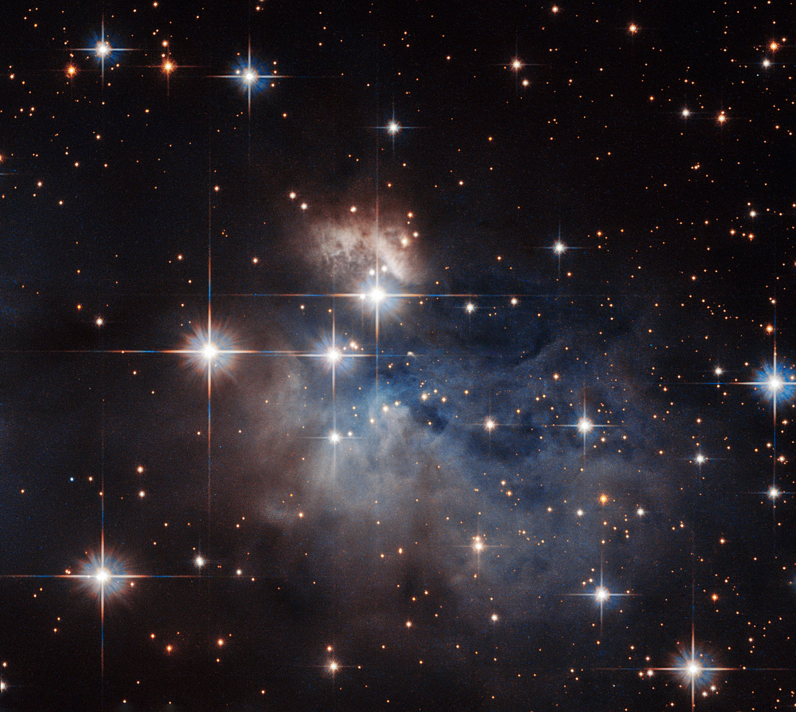
Showcased at the centre of this NASA/ESA Hubble Space Telescope image is an emission-line star known as IRAS 12196-6300. Located just under 2300 light-years from Earth, this star displays prominent emission lines, meaning that the star’s light, dispersed into a spectrum, shows up as a rainbow of colours marked with a characteristic pattern of dark and bright lines.
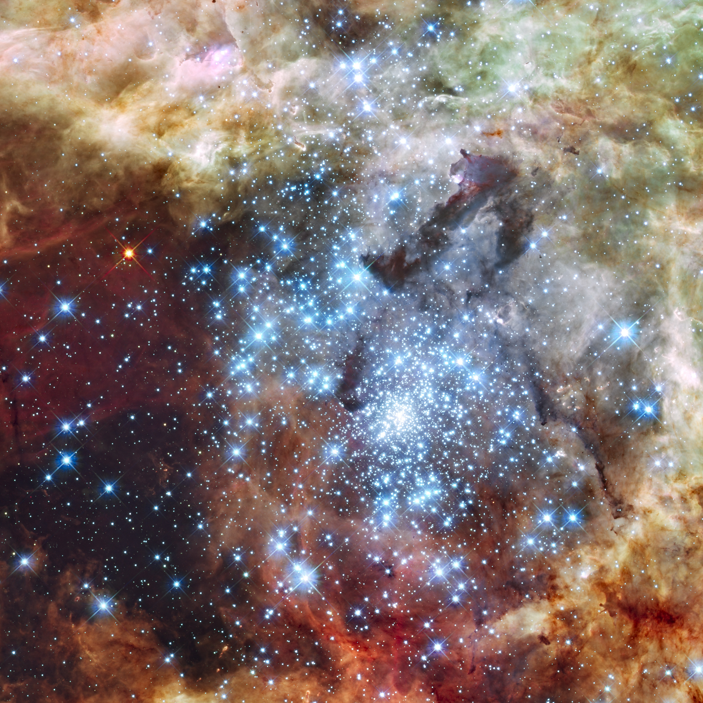
Image release August 16, 2012 Astronomers using data from NASA's Hubble Space Telescope have caught two clusters full of massive stars that may be in the early stages of merging. The 30 Doradus Nebula is 170,000 light-years from Earth.
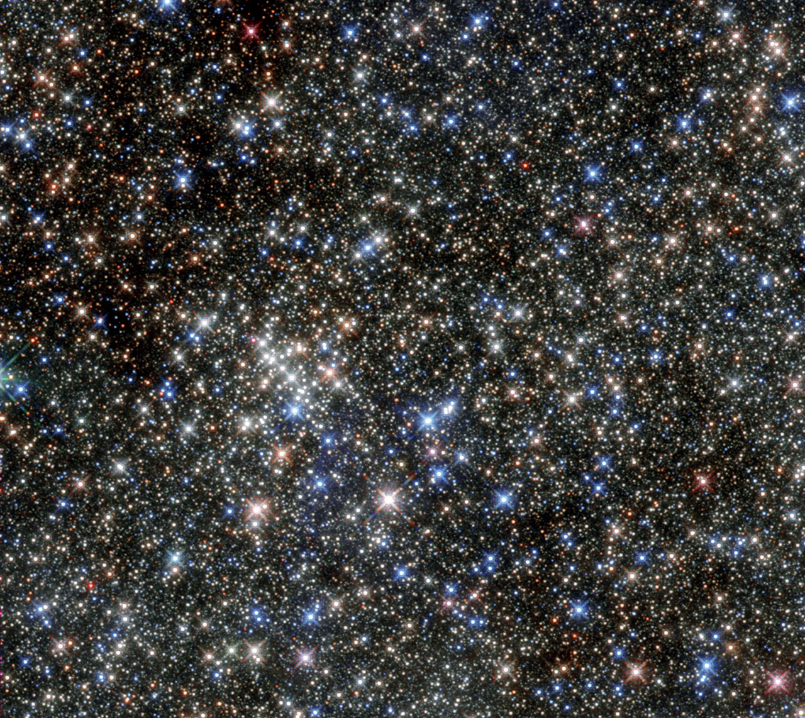
Although this cluster of stars (Quintuplet Cluster) gained its name due to its five brightest stars, it is home to hundreds more. The huge number of massive young stars in the cluster is clearly captured in this NASA/ESA Hubble Space Telescope image. The cluster is located close to the Arches Cluster and is just 100 light-years from the centre of our galaxy.
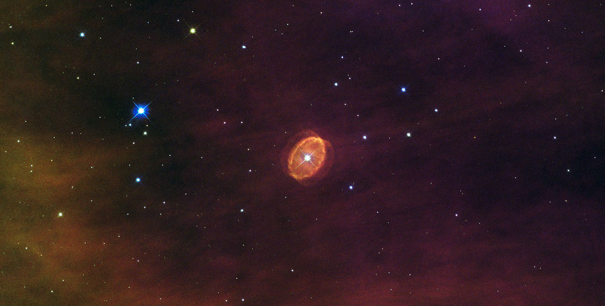
Floating at the center of this new Hubble image is a lidless purple eye, staring back at us through space. This ethereal object, known officially as [SBW2007] 1 but sometimes nicknamed SBW1, is a nebula with a giant star at its center.
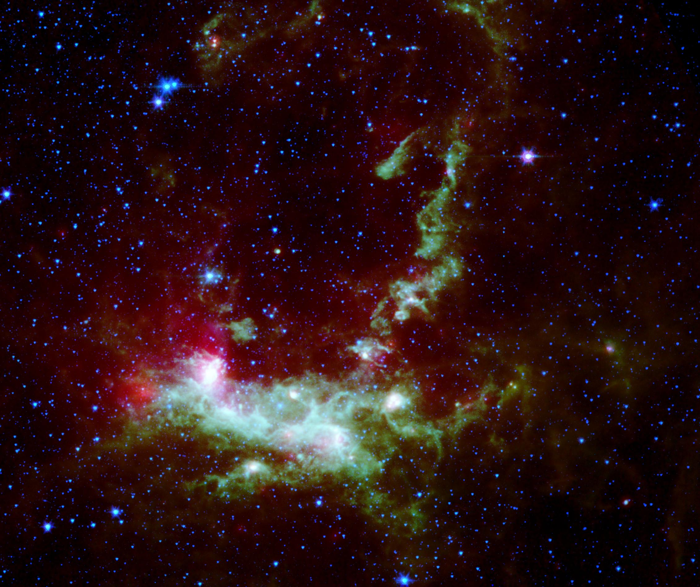
This image from NASA Spitzer Space Telescope, shows the wispy filamentary structure of Henize 206, is a four-color composite mosaic created by combining data from an infrared array camera IRAC.
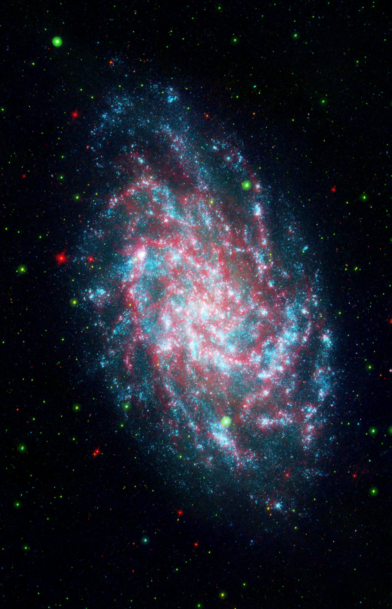
NASA Galaxy Evolution Explorer Mission celebrates its sixth anniversary studying galaxies beyond our Milky Way through its sensitive ultraviolet telescope, the only such far-ultraviolet detector in space. Pictured here, the galaxy NGC598 known as M33.
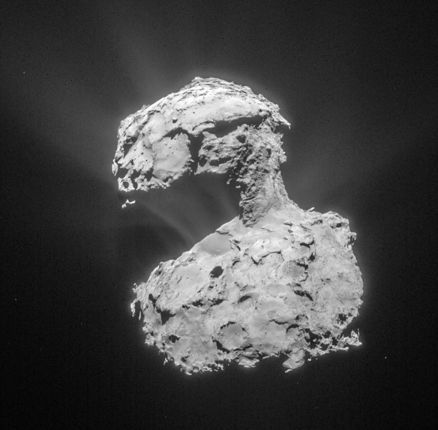
This image, taken by ESA Rosetta navigation camera, was taken from a distance of about 53 miles 86 kilometers from the center of Comet 67P/Churyumov-Gerasimenko on March 14, 2015
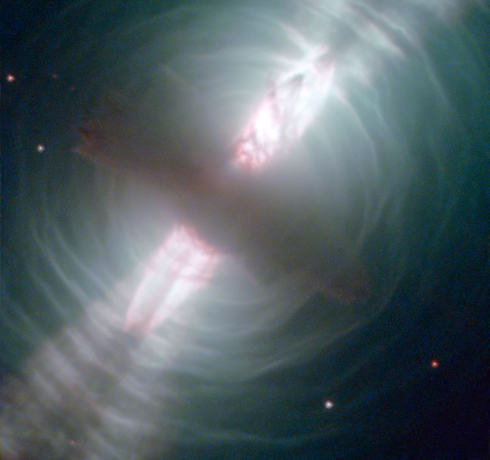
NASA image release April 27, 2012 The NASA/ESA Hubble Space Telescope has been at the cutting edge of research into what happens to stars like our sun at the ends of their lives
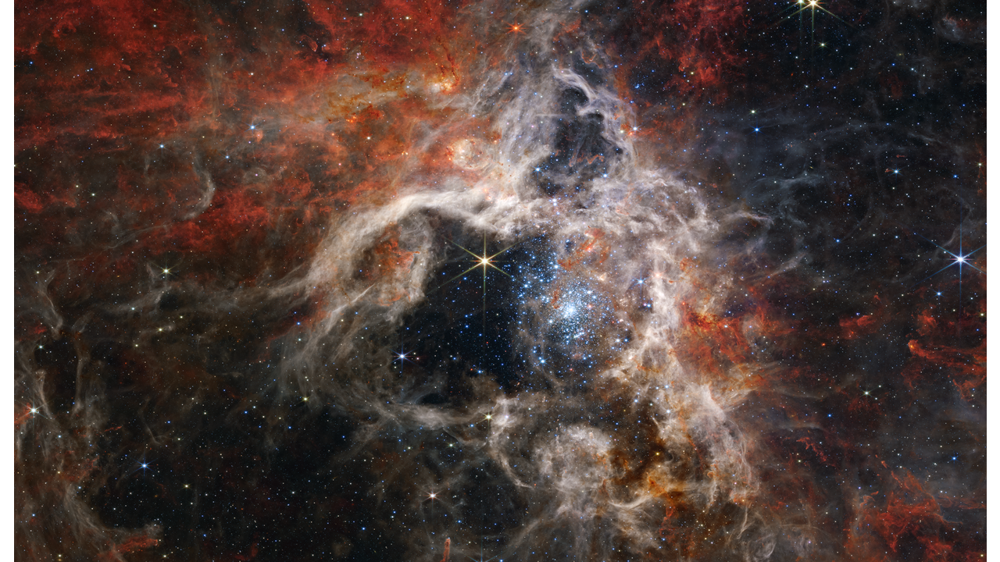